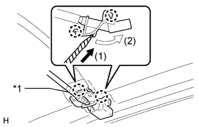
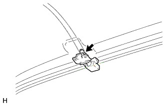

WASHER NOZZLE (for Front Side) > ADJUSTMENT |
| 1. REMOVE WASHER NOZZLE SUB-ASSEMBLY |
|  |
Using a screwdriver, detach the 2 claws and separate the washer nozzle sub-assembly as shown in the illustration.
| *1 | Protective Tape |
|  |
Disconnect the washer nozzle sub-assembly from the washer hose.
| 2. ADJUST WASHER NOZZLE SUB-ASSEMBLY |
Select a washer nozzle so that the contact area is within the standard. Replace the washer nozzle with the selected one.

| *1 | Available Washer Nozzles | *2 | Washer Fluid Spray Angle |
| *3 | Part Number | - | - |
| 3. INSTALL WASHER NOZZLE SUB-ASSEMBLY |
Connect a new washer nozzle sub-assembly to the washer hose.
Attach the 2 claws to install the washer nozzle sub-assembly.